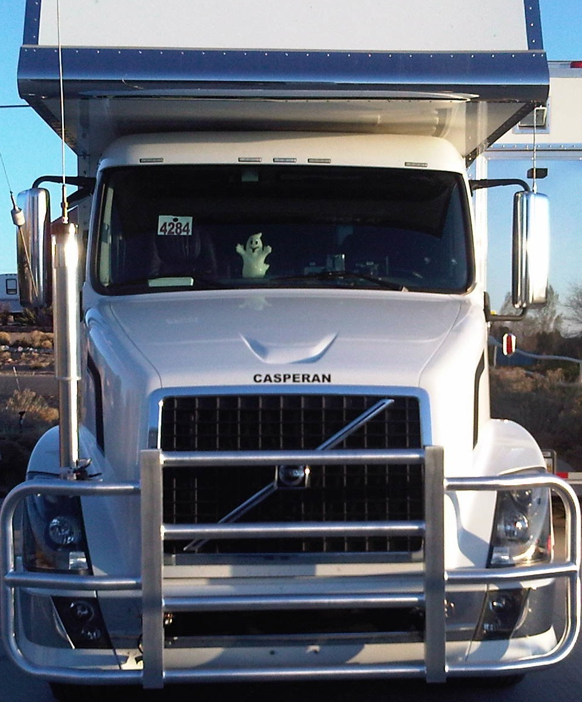
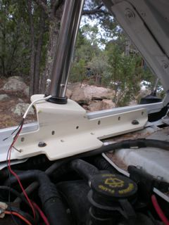
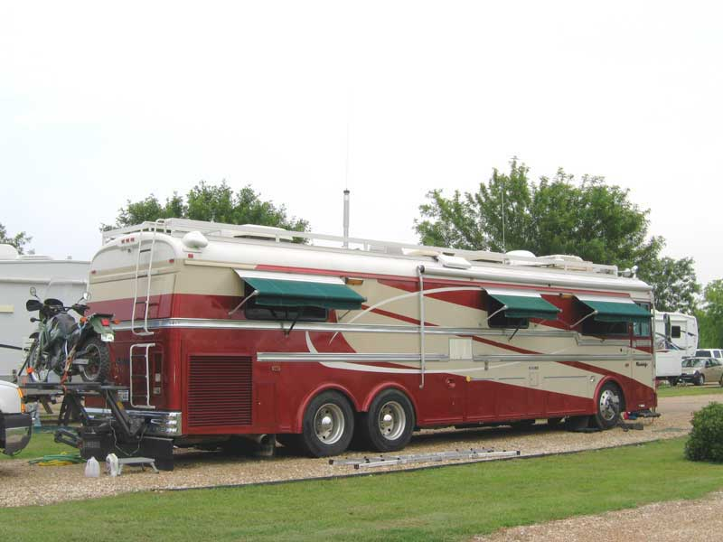

Recovered article. HTML body is from Common Crawl (text only); images came from the Sep 2022 iOS PDF:
OTR & RV.pdf ·
9 extracted images & links ·
9 of 9 images merged inline (aspect-ratio matched). Original src preserved on each
<img> as
data-original-src.
Contents: Basic;
Ground Plane Issues;
HF Antenna Ideas;
VHF Antenna Ideas;
Unique Electrical Problems; Wiring Considerations;
Generators; Power Inverters;
Conclusion;
Basics
It would appear that there is no correlation between OTR (Over The Road) trucks, and an RVs (Recreational Vehicles). However, their owners face (almost) the same unique installation problems. As you read on, the similarities will be come more evident. However, some of what follows might not be applicable to your specific situation, but the data presented will at least point you in the right direction.
Common threads often include long cable runs, limited antenna mounting options, poor ground plane issues, and RFI suppression. Worse, the answers are not always simple; the solutions are usually more expensive than passenger vehicle installations; and most manufacturers are generally less cooperative than automobile manufacturers. The latter is especially true when the chassis, and the coach-work are made by different companies; a common occurrence with RVs, and not unknown in OTR trucks.
As daunting as the problems might appear at the onset, there are solutions! Like the old cliche says, if there is a will, there is a way. When it comes to OTR & RV installations, a good dose of iron will might very well be an necessary ingredient! Or at least, so it seems.
Most of what you read here is not first hand knowledge as I have never been an OTR driver, or an RV owner, albeit I've had a goodly amount of wheel time in both. Rather it has been garnered from other amateurs who have found a solution. I do need to thank all those folks in general, and specifically Peter Naumburg, K5HAB, who has entrusted his rather expensive RV to me on more than one occasion.
Incidentally, the term RV can also be applied to motor homes, travel trailers, or even large vans, as they all have similar installation issues. This includes the r-Pod shown at right.
If your RV is a trailer pulled by a diesel pickup, you might want to read this article.
☜Return☜
Ground Plane Issues
 The most important part of any mobile operation is the antenna system. In other words, the antenna, and the ground plane it is mounted over. Depending on the make, model, and year, OTR and RV bodies may be made of fiberglass and/or plastic resins and/or aluminum. Some older model may be steel, at least in part. The roofs on some models are rubber based, and even when they're not, the material is usually very thin. These facts may eliminate standard types of antenna mounting schemes, and present ground plane issues. As I have stated many times within these pages, it is the metal mass directly under the antenna, not what's alongside, that counts. Again, ground straps are not a substitute for a ground plane.
The most important part of any mobile operation is the antenna system. In other words, the antenna, and the ground plane it is mounted over. Depending on the make, model, and year, OTR and RV bodies may be made of fiberglass and/or plastic resins and/or aluminum. Some older model may be steel, at least in part. The roofs on some models are rubber based, and even when they're not, the material is usually very thin. These facts may eliminate standard types of antenna mounting schemes, and present ground plane issues. As I have stated many times within these pages, it is the metal mass directly under the antenna, not what's alongside, that counts. Again, ground straps are not a substitute for a ground plane.

On OTR and RV models, the hood and fenders are often hinged just behind the front bumper negating that as a mounting area, unless special mounting arrangements are made (see tow hook install at right). Fairing, and other streamlining body panels shorten the list even more. Mounting behind the cabin on OTR trucks is out too, because of the interaction caused by the mass of the trailer being pulled. These facts cause most owners to resort to using the mirror mounts; no doubt the worst place in terms of ground plane losses. No amount of ground straps will negate this premise, even though some operators will disagree.
One of the slickest installs I've seen to date, belongs to Peter Naumburg, K5HAB. His antenna is mounted atop a cow-catcher of sorts, supported by the frame extensions commonly used for tow hooks (the right photo depicts his previous tow hook location). Remounted thusly, the ground losses were reduced, which increased efficiency, and reduced the static level as well. There are additional photos in the Photo Gallery in the OTR & RV album. Incidentally, the cow-catcher (Peter doesn't call it that!) was custom made by Rig-Guard. To say they're well made is an understatement! If you drive a big rig in deer country, you need one!
Another place you almost never see antennas mounted is atop the fuel tank foot rail. Although on some models the streamline fairing covers the tanks, it is nonetheless the largest metal mass one can easily mount an antenna over on some OTR trucks.
On some older models, the cowl is steel, and somewhat wider than the one shown left on the Volvo. This points out the fact, that no two models are the same, even between model years! Adding insult, the lack of a full-metal body, and the requisite long factory wiring harnesses increases the likelihood of RFI ingress and egress. This means that extra care must be used when routing wires, especially low current control wiring (i.e.: remotely tuned antenna cabling). Therefore, the liberal use of split beads is a given.
Typically, if remote control antenna cabling is properly choked, it isn't necessary to use shielded cable. However, due to the long lengths required in some RVs, shielded cabling may be required to quell induced RFI problems. If you use shielded motor control cable, only ground the shield on the antenna end to avoid creating a ground loop! And don't forget to install a common mode choke right at the antenna!
☜Return☜
HF Antenna Ideas

As stated above, the biggest issue OTR and RV owners face, is the lack of a decent mounting location. This fact exacerbates both ground plane and shunt (capacitance) losses. Add in the higher ground clearance, the lack of a metal body, and they end up being less of a ground plane than your average sedan. Unless, of course, it is made out of aluminum like an Airstream®. We should all be so lucky!
 On smaller, Van-based RVs, the right front fender area becomes one of the few options. The mounting bracket shown at right, was designed by Hal "Red" Wilson, W5BUF (ex KE5DKM), for his E-350 Ford-based RV. The camera was canted, so the antenna doesn't look vertical in the photo, but it is. The bracket is sturdy enough to hold any reasonable antenna.
On smaller, Van-based RVs, the right front fender area becomes one of the few options. The mounting bracket shown at right, was designed by Hal "Red" Wilson, W5BUF (ex KE5DKM), for his E-350 Ford-based RV. The camera was canted, so the antenna doesn't look vertical in the photo, but it is. The bracket is sturdy enough to hold any reasonable antenna.
The left photo is Peter's (K5HAB) Winnebago View. The Scorpion SA-680 is mounted on a bracket welded to the custom bull bar.
Some RV owners install their HF antennas on the rear ladder. This is a less than desirable location, unless the body is metal. When it isn't, not only are ground plane losses higher, the likelihood of common mode drastically increases.
In some cases, the ladder itself offers an alternative if it isn't grounded to the chassis or the body. An auto coupler mounted near the base, and well grounded to the frame, will allow at least 40 through 10 meters in most cases. There are a few caveats to think about, however.
The RF output voltage from an auto coupler can be very high (>10 kv) even at low power levels (≈100 watts). Obviously, the ladder must be well insulated, and the attaching bolts have to be well isolated too. The ground side lead of the coupler must be kept short! Inches, not feet. This requires that the auto-coupler to be mounted under the RV. SGC makes several weatherproof models which are applicable.
If you do go the auto coupler route, stationary operation means you can extend a long wire as far as you have room for. A 100 foot one works rather well. Remember, the far end will have very high RF voltages, so the end insulator has to be robust.
One thing you don't want to do is mount the base of a screwdriver antenna inside the RV, and extend just the whip outside. I can't think of a lossier way to install an antenna, nor one with more RFI potential. Yet, at a recent jamboree, several installations of this type were seen.

For a few RV owners, stationary operation is all they attempt to do, which is fine. If this is your mode of operation, keep a few facts in mind. A mobile antenna stuck atop a tripod mount, with or without radials isn't a very efficient antenna. You're much better off with a dipole, and no I'm not talking about a couple of hamsticks. There are a number of on-line articles describing temporary dipole construction. A simple Google search will turn up enough to keep you busy reading for a few days, so I won't duplicate the effort here.
In the Photo Gallery, under the OTR & RV Album, is a very unique installation by Mike Kane, KB1JTB. A side view is shown at right. He had a large piece of diamond plate attached to the roof of his motor home. The antenna, a Scorpion 680, is hinged at the bottom, so once parked, he raises the antenna, and he's in business. Albeit expensive, it sure eliminates the hassles of a tripod, or dipole installation, and is probably as efficient, all considering.
☜Return☜
VHF Antenna Ideas
Mounting a standard HF or VHF mobile antenna on an RV is wrought with problems. Aside from the ground plane issues, fiberglass bodies tend to stress fracture around mounting holes. Because of this, a proper backing plate should be used, and the holes drilled and bolted through rather than using self-tapping screws. For example, Larsen makes both VHF and UHF antennas (OM150CK) designed for mounting on fiberglass. They are a loaded half wave and don't require a ground plane, but they work much better if there is one. Even a small 18 inch square aluminum plate will suffice (this "trick" also works for most dual band antennas). The plate will also minimize any stress cracking.
I should mention, that it is a good idea to install a common mode choke on the feed line to any mounted antenna atop a non-conducting surface.
☜Return☜
Unique Electrical Problems
As I stated above, OTR trucks and RVs seldom have a shortage of electrical power. The smallest of OEM alternators are typically rated at 150 amps, and sometimes are large as 250 amps! Some actually have multiple alternators, further exacerbating RFI issues. Most are a nominal 12 volts (13.8 VDC), but some use 24 volt systems. There are often multiple batteries with enough reserve capacity for any use an amateur might put them through. However, they have an Achilles heel.
Because the bodies are not steel, there is a myriad of ground straps and ground conductors throughout the vehicles wiring harnesses. Their requisite long lengths allow an inordinate amount of RF energy to ingress the wiring (and the wiring to egress as well). This fact requires attention to detail when installing equipment into them.
Direct (and short) power runs to the main battery wiring are very important, even if ancillary power points are provided. Keep in mind, the best way to minimize RFI ingress is to keep the impedance of DC wiring as low as you can. Here's why.
Any suppression technique you use to control AFI, RFI, or EMI, must have an impedance of at least one magnitude less than that of the circuit you're trying to suppress. This is very difficult to achieve in a DC power supply circuit by any normal means. Thus, you should endeavor to keep the initial impedance as low as you can. Therefore, direct to battery, DC wiring is the only recourse.
I've mentioned this elsewhere on this web site, but it needs to be repeated here as the original anecdotal suggestion came from another web site dedicated to OTR operation. To wit: Twisting the power cord with an electric drill (or other means) in an effort to control alternator whine is both inane and ill-advised. Where this "solution" came from is anyone's guess. If you believe it works, reread the previous paragraph, and read my Wiring and Alternator articles.
There is another issue that long DC ground leads exacerbate, and that is RFI egress as noted above. Since most OTR trucks, and larger RVs are diesel, and modern emission standards are here to stay, OEMs have resorted to using electronic shuttle systems in place of the older mechanical ones. This makes diesel engines just as RF noisy as their gasoline counterparts. Add the fact the bodies are nonmetallic, and you can have a potential RFI nightmare. The solution is the application of a liberal amount of split beads on the offending (and offended) devices. Make sure you read the RFI article, so you'll know where, and where not to, install them.
Neatness counts when doing any kind of wiring. Running wires hither and yon, or bundling them up with tyraps and tape, is a prescription for both short, and long term problems. If a cable is too long, cut it off.
☜Return☜
Wiring Considerations
RVs are typically longer than passenger vehicles, and usually have both DC and AC wiring. As a result, RFI ingress (and egress) is always a bugbear. Following the recommendations in my Wiring and Bead articles are a good starting point. Pay particular attention to voltage drop calculations. Most RVs utilize voltage inverters and/or generators. When in use, these devices generate a lot of RFI egress, especially the former (see below). Shielding and bypassing the leads just doesn't seem to make much difference, due in part to their digital circuitry. Generator ignition systems aren't any different than vehicle ignition systems, so the same RFI suppression techniques can be used.
 One good aspect is, RVs use BIG house-battery systems. They're always isolated from the SLI battery system, but may be charged by them. The only drawback to using the house batteries is the need to keep an eye on their voltage level. This is especially important if you use a battery booster. Remember, 10.5 volts is about the low as you can take a battery without permanent damage. Some might argue that RV house-battery systems typically have monitoring devices which both alert, and auto-start for on board generators. While this is true, in some smaller RVs, the house battery isn't much more than an SLI or two, with the only charging current coming from the engine alternator. In these cases, a decent voltmeter is a good investment.
One good aspect is, RVs use BIG house-battery systems. They're always isolated from the SLI battery system, but may be charged by them. The only drawback to using the house batteries is the need to keep an eye on their voltage level. This is especially important if you use a battery booster. Remember, 10.5 volts is about the low as you can take a battery without permanent damage. Some might argue that RV house-battery systems typically have monitoring devices which both alert, and auto-start for on board generators. While this is true, in some smaller RVs, the house battery isn't much more than an SLI or two, with the only charging current coming from the engine alternator. In these cases, a decent voltmeter is a good investment.
If you're adding a house battery, and plan on using an inexpensive diode isolator, check first to make sure the alternator has an adjustable voltage output (most do not). If it doesn't, look into the Hellroaring® unit. There is more information on these systems in the Alternator and Battery article.
☜Return☜
Generators
Most RVs, at least the larger ones, come equipped with a generator. Whether gasoline, propane, or diesel fuel, they're typically sized (kW rating) for the accessories on-board. They may be electrically integrated with house batteries charge controllers and/or power inverters and/or shore power supplies although that isn't a given. To cover them in any detail is beyond the scope of this web site. However, there are two basic types which need to be mentioned for RVs which do not come with an OEM generator.
Most of the larger models (over 2 kW rated) are typically powered by four cycle engines running at a nominal 1800 RPM, and powering an AC alternator providing near 60 Hz, 120/240 volts AC output. The most popular models are built by Cummins/Onan, and more information can be obtained via their web site.
Smaller models come it two types—engine/alternator, and inverters.
☜Return☜
Power Inverters
This section is a duplicate of the one appearing in the Portable article. The major difference is the typical output rating of an RV power inverter, are much higher than those used in portable operation. Nonetheless, their RFI issues are basically the same.
 There are two major types; Modified sine wave (MSW) like the Vector unit shown at left, and pure sine wave (PSW). There is an excellent review article in the April 2009 issue of QST, which describes how they work. As noted in the article, MSW inverters are prone to generating RFI. While less expensive than PSW units, their extra cost is easy to justify when weighed against the cost of filtering out the RFI; a nearly impossible task!
There are two major types; Modified sine wave (MSW) like the Vector unit shown at left, and pure sine wave (PSW). There is an excellent review article in the April 2009 issue of QST, which describes how they work. As noted in the article, MSW inverters are prone to generating RFI. While less expensive than PSW units, their extra cost is easy to justify when weighed against the cost of filtering out the RFI; a nearly impossible task!
One problem you might encounter when using MSW units, is using them to power devices which use switching power supplies. The staggered ramp up of the output voltage causes them to operate erratically. It doesn't happen all the time, but often enough to be of concern.
It should be mentioned that their efficiency rating changes with the load. At light load levels, efficiency is somewhat lower than it is at mid loading, and typically goes back down near full loading. Therefore, you should select one which matches your load requirements. Incidentally, there are models available which operate in reverse. When they're connected to the mains, they recharge the connected batteries. Except for large RVs, you generally don't see them, as they're very expensive.
There is another potential problem exacerbated by power inverters, and that is a Ground Loop. With one exception, RV manufacturers don't make the chassis of their coaches—bus, truck, and van manufacturers do that for them. Little if any thought goes into how things are grounded throughout most RVs, and if you're not into amateur radio, you'd probably never notice. Correcting built-in ground loop problems can be a very exasperating undertaking, especially when the coach and/or chassis manufacturer won't cooperate. Adding insult, few coach builders have published wiring schematics, and when they do they're often incorrect.
I should mention that vehicle manufacturers are now equipping a lot of pickup trucks, and SUVs with factory-installed inverters. All appear to be MSW, and of varying quality RFI wise. Since most are rated at a maximum of 120 watts, they're not large enough to power a 100 watt (200 input), SSB transceiver.
☜Return☜
Conclusion
As I stated previously, I have never owned an RV. That said, I don't think the mobile operating problems associated with them are any different than a standard sedan or pickup truck, albeit a little more severe due to the lack of a steel body and longer wiring lengths. The key words are ingenuity, forethought, and above all patience; the same ones the rest of us should follow.
There is one area of OTR operation that can have a big impact on how and where you mount your radios and antennas. And that is, ownership. Some companies will not allow any radio equipment (but their own) to be installed. Distraction, illegal (out of band) CB operation, property damage issues, and other causes have put the proverbial kibosh on some OTR amateur radio activity. If this is your case, you have my sympathy. If it isn't, but you still have restrictions on installing radios, here are a few suggestions.
I have driven five company vehicles, all of which had amateur transceivers and antennas permanently installed (holes drilled in the body work). I ask first by explaining my reasoning. No one ever turned me down. I did my utmost to insure the installations were neat and tidy. I even received an award from one of my employers for the cleanest company car. What's more, one of my bosses became an amateur as a result. This proves neatness counts!
A few companies allow amateur radio equipment, but nothing can be permanently installed. Quite obviously, the resulting installation is always an even greater compromise. In these cases, even though the efficiency isn't very good, an auto coupler/whip antenna may be your best bet. I've seen vice-grip mounted antennas clamped on about every metal surface imaginable. If you resort to mounting even a CB whip like this, make it as secure as you can. And make sure your radio is also secure.
Although I possess a lot of wanderlust, driving an OTR truck (or an RV) was never my life's desire, but I did drive a milk truck for a few months. Radios were not allowed except for the AM radio installed in the dash. So, I used a handy talkie. Not the best, but better than none. The experience played a big factor in my decision to change careers. Think about it.
☜Return☜
Home
 The most important part of any mobile operation is the antenna system. In other words, the antenna, and the ground plane it is mounted over. Depending on the make, model, and year, OTR and RV bodies may be made of fiberglass and/or plastic resins and/or aluminum. Some older model may be steel, at least in part. The roofs on some models are rubber based, and even when they're not, the material is usually very thin. These facts may eliminate standard types of antenna mounting schemes, and present ground plane issues. As I have stated many times within these pages, it is the metal mass directly under the antenna, not what's alongside, that counts. Again, ground straps are not a substitute for a ground plane.
The most important part of any mobile operation is the antenna system. In other words, the antenna, and the ground plane it is mounted over. Depending on the make, model, and year, OTR and RV bodies may be made of fiberglass and/or plastic resins and/or aluminum. Some older model may be steel, at least in part. The roofs on some models are rubber based, and even when they're not, the material is usually very thin. These facts may eliminate standard types of antenna mounting schemes, and present ground plane issues. As I have stated many times within these pages, it is the metal mass directly under the antenna, not what's alongside, that counts. Again, ground straps are not a substitute for a ground plane.


{kind=link}
{kind=link}
{kind=link}
{kind=link}